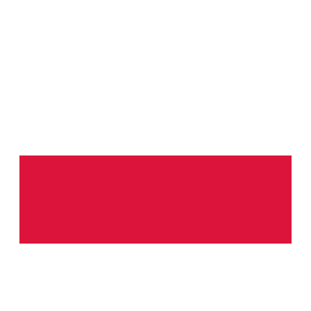

La selección de Países Bajos ha tenido un impacto significativo en
la Eurocopa, ganando su primer y único título en 1988 con una
memorable victoria sobre la Unión Soviética en la final. Además, han
sido semifinalistas en varias ocasiones, como en 1992, 2000 (cuando
fueron co-anfitriones) y 2004. Con su estilo de juego ofensivo y
talentosos jugadores, los Países Bajos continúan siendo una fuerza
notable en el fútbol europeo, aspirando a sumar más títulos a su
palmarés.
Francia
La selección de Francia ha sido muy exitosa en la Eurocopa, ganando
el torneo en 1984 y 2000. En 1984, como anfitriones, desplegaron un
fútbol brillante liderado por Michel Platini. En 2000, ganaron con
un gol de oro en la final contra Italia. Francia también fue
subcampeona en 2016, cuando fueron anfitriones nuevamente pero
perdieron ante Portugal. Con su historia de éxito y talento
constante, Francia sigue siendo una de las selecciones más fuertes
de Europa.
Austria
La selección de Austria ha tenido una participación limitada en la
Eurocopa, debutando como co-anfitriona en 2008 y volviendo a
participar en 2016 y 2020. Su mejor desempeño fue en 2020, cuando
avanzaron a los octavos de final. Aunque no tienen un historial
extenso de éxitos en el torneo, Austria sigue desarrollando su
equipo y busca mejorar sus resultados en futuras competiciones
europeas.

Polonia
La selección de Polonia ha participado en varias ediciones de la
Eurocopa, con su mejor actuación en 2016, cuando llegaron a los
cuartos de final antes de ser eliminados por Portugal en penales.
Polonia también ha competido en las ediciones de 2008, 2012 (como
co-anfitrión) y 2020. Con una base de jugadores talentosos, Polonia
sigue esforzándose por alcanzar nuevas alturas en el fútbol europeo
y busca consolidar su presencia en los torneos internacionales.